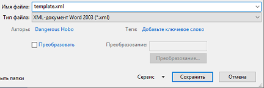

XML шаблон представляет из себя обыкновенный Word документ
Места где необходимо подставить значения с Excel таблицы должны быть помечены названиями соответствующим xlsx документу, обернуты фигурными скобками и выкрашены в красный цвет
Тип файла должен быть:"XML-документ Word 2003"
Если Ваш файл имеет расширение xml- это еще не значит, что он соответствует необходимому типу, во избежании потери данных произведите его пересохранение в Word'e:
Файл->Сохранить как->XML-документ Word 2003
